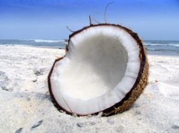

DD Full Screen Slider
This full screen Slider creates slides that cover the entire page, allowing you to present content in an interactive, digestible format to viewers. Desktop and mobile friendly, the slides can be navigated in a plethora of ways- auto generated navigational buttons, keyboard, mousewheel, and drag/swipe on the desktop and on mobile. Each slide adds an unique hash (#) to the window URL to make them navigable and sharable with distinct URLs. Unique amongst its features is the ability to enable "scrollable" DIVs inside a slide that do not partake in the scrolling of the slide itself when swiped, so the content in question can be scrolled instead. Full Screen Slider harnesses CSS3 for its animations, falling back to jQuery for older browsers.
All About Mushrooms
"Mushroom" describes a variety of gilled fungi, with or without stems, and the term is used even more generally, to describe both the fleshy fruiting bodies of some Ascomycota and the woody or leathery fruiting bodies of some Basidiomycota.
Coconuts!

A scrollable DIV!
Coconuts are different from any other fruits because they contain a large quantity of "water" and when immature they are known as tender-nuts or jelly-nuts and may be harvested for drinking. The coconut is known for its great versatility as seen in the many uses of its different parts and found throughout the tropics and subtropics. Coconuts are part of the daily diets of many people. Coconuts are different from any other fruits because they contain a large quantity of "water" and when immature they are known as tender-nuts or jelly-nuts and may be harvested for drinking. When mature, they still contain some water and can be used as seednuts or processed to give oil from the kernel, charcoal from the hard shell and coir from the fibrous husk.
Coconuts are different from any other fruits because they contain a large quantity of "water" and when immature they are known as tender-nuts or jelly-nuts and may be harvested for drinking. The coconut is known for its great versatility as seen in the many uses of its different parts and found throughout the tropics and subtropics. Coconuts are part of the daily diets of many people. Coconuts are different from any other fruits because they contain a large quantity of "water" and when immature they are known as tender-nuts or jelly-nuts and may be harvested for drinking. When mature, they still contain some water and can be used as seednuts or processed to give oil from the kernel, charcoal from the hard shell and coir from the fibrous husk.
Amsterdam City
Amsterdam is the capital city and most populous city of the Kingdom of the Netherlands. Its status as the Dutch capital is mandated by the Constitution of the Netherlands though it is not the seat of the Dutch government, which is The Hague. Amsterdam has a population of 825,080 within the city proper, 1,317,663 in the urban area and 1,590,520 in the metropolitan area.